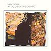

Celtic Lyrics Corner > Artists & Groups > Nightnoise > At The End Of The Evening
|  |
At The End Of The Evening
(1998) |
| Tracks : |
1. Windell
2. Of A Summer Morn 3. Hugh 4. Jaunting 5. The Courtyard 6. Bring Me Back A Song 7. Snow On High Ground 8. At The Races 9. Forgotten Carnival 10. The Cuilin Hills 11. Her Kansas Sun 12. End Of The Evening 13. The Swan |